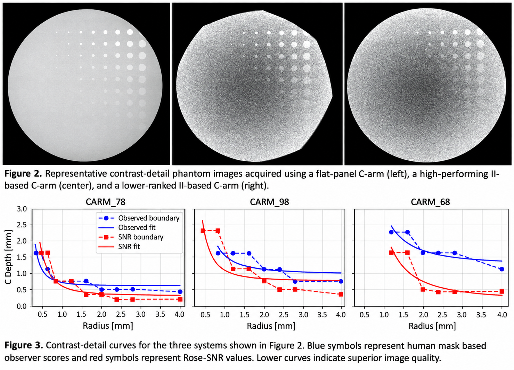

Research Areas
Computational Electromagnetics & THz Near-Field Optics
Research involving terahertz near-field electromagnetic response, nanoscale optical phenomena, and computational modeling, including work at Ames National Laboratory.
- THz near-field response and electromagnetic field modeling
- Numerical analysis of field distributions and material response
- Research contributions to nanoscale THz studies of materials
Quantum Transport & Topological Materials
Theoretical and computational studies of electronic transport in low-dimensional and topological quantum systems, including graphene and Weyl semimetals.
- Berry curvature and Lorentz-force effects in magnetotransport
- Hofstadter physics in twisted graphene structures
- Spin-orbit coupling, Hall effects, and electron transport
Numerical Modeling & Scientific Computing
Scientific computing for physics-based simulation, data analysis, and reproducible computational research.
- Python, MATLAB, and Mathematica
- Fourier analysis, numerical integration, and matrix-based calculations
- Parameter sweeps, visualization, and simulation automation
- Parallel and computationally intensive numerical workflows
Computational Medical Physics
Computational projects and training that connect quantitative physics methods with radiation dose calculation and medical physics applications.
- Monte Carlo radiation dose simulation in a water phantom
- Numerical approaches to dose analysis
- Interest in computational methods for therapeutic medical physics
Selected Projects & Publications
Open Scientific Code
Selected repositories include electromagnetic modeling, quantum transport simulations, and radiation dose calculations. The public code portfolio illustrates scientific programming and numerical approaches used across my research.
Additional Applied Research
Mobile C-Arm Image Quality Research
Evaluated image quality across 11 mobile C-arm systems using contrast-detail phantom imaging, human observer assessment, and quantitative image analysis.
Methods: Contrast-detail analysis, observer studies, Rose-SNR, image processing, and statistical comparison.
